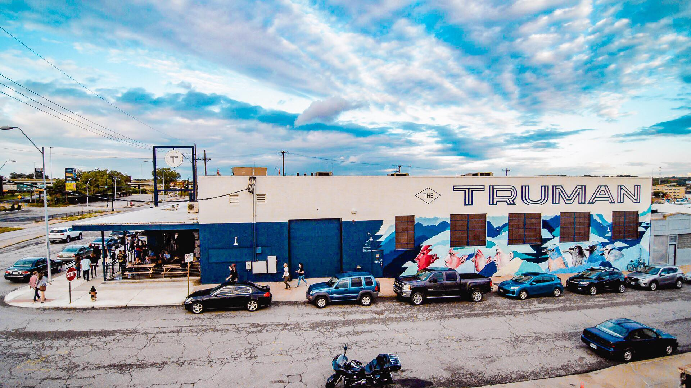
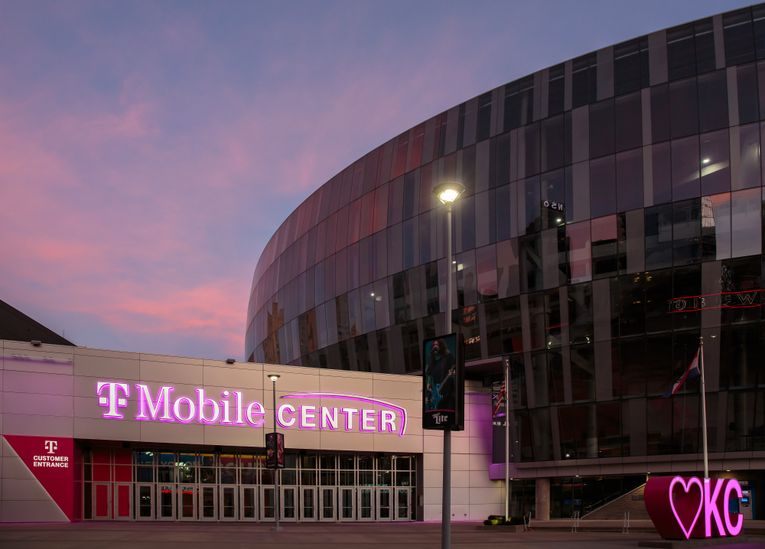
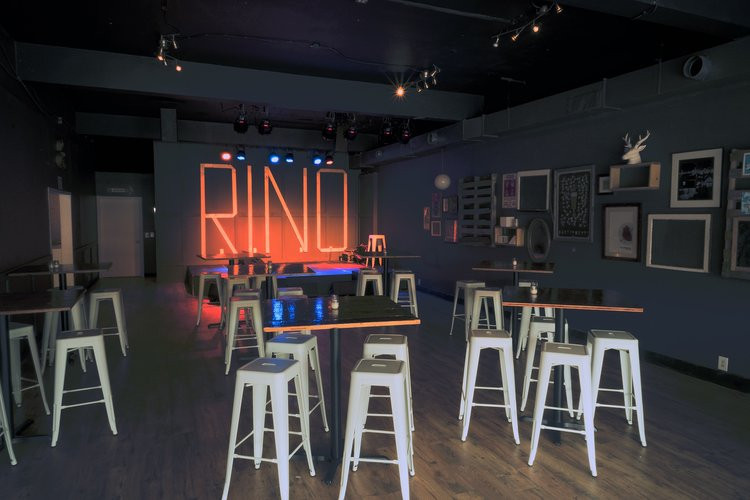
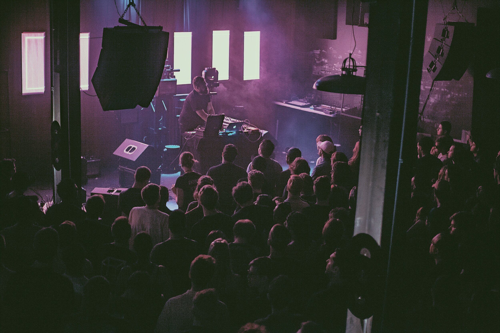
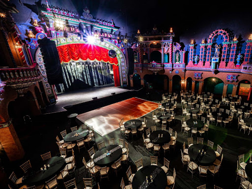
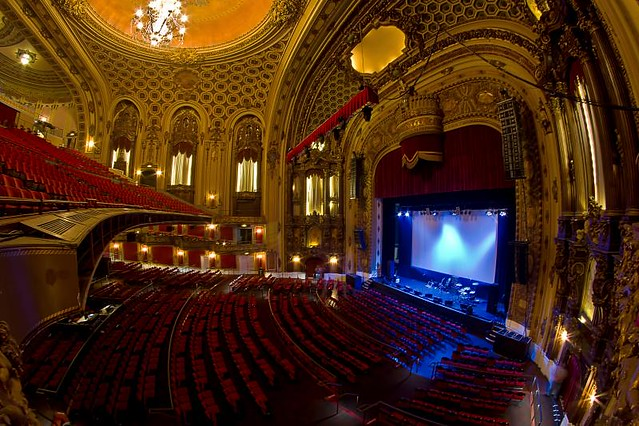
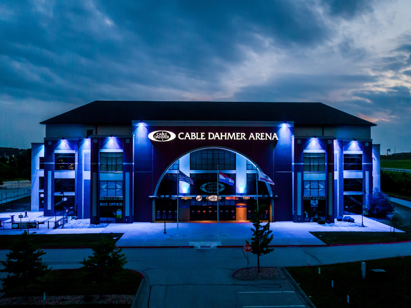
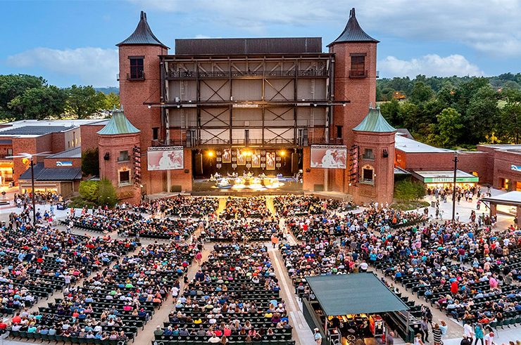

8 Best Concert Venues in Kansas City
Kansas City’s vibrant music scene comes alive through its incredible venues, each offering a unique experience for music lovers. Whether you’re into cozy shows, epic productions, or anything in between, KC’s concert venues set the perfect stage for unforgettable nights of live music.
The Truman
601 East Truman Road Kansas City, MO 65106
(816) 205-8560A vibrant music venue known for its intimate atmosphere, stellar acoustics, and a diverse lineup of live performances.
 The TrumanT-Mobile Center
1407 Grand Boulevard Kansas City, MO 64106
(816) 949-7100A premier entertainment venue, hosting world-class concerts, sports events, and performances in its state-of-the-art arena located in the heart of downtown.
 T-Mobile CenterThe Rino
314 Armour Rd North Kansas City, MO 64116
A cozy, community-focused venue that showcases local and emerging artists, offering an intimate space for live music and creative expression.
 The RinorecordBar
1520 Grand Blvd Kansas City, MO 64108
(816) 766-2527A classic live music venue and bar, celebrated for its eclectic lineup of performances, intimate setting, and vibrant atmosphere.
 recordBarUptown Theater
3700 Broadway Kansas City, MO 64111
(816) 753-8665An iconic historic venue, renowned for its stunning architecture and hosting a wide range of concerts, performances, and events in a grand setting.
 Uptown TheaterThe Midland
1228 Main Street Kansas City, MO 64015
(816) 283-9900A theater known for its elegant ambiance, offering a premier setting for concerts, comedy shows, and unforgettable live events.
 The MidlandCable Dahmer Arena
19100 East Valley View Parkway Independence, MO 64055
(816) 442-6128A venue that hosts a variety of events, including concerts, sports games, and community gatherings,
 Cable Dahmer ArenaStarlight Theatre
4600 Starlight Road Kansas City, MO 64132
(816) 363-7827An outdoor venue, blending the magic of live performances with the beauty of a starry night, perfect for concerts and Broadway shows.
 Starlight Theatre